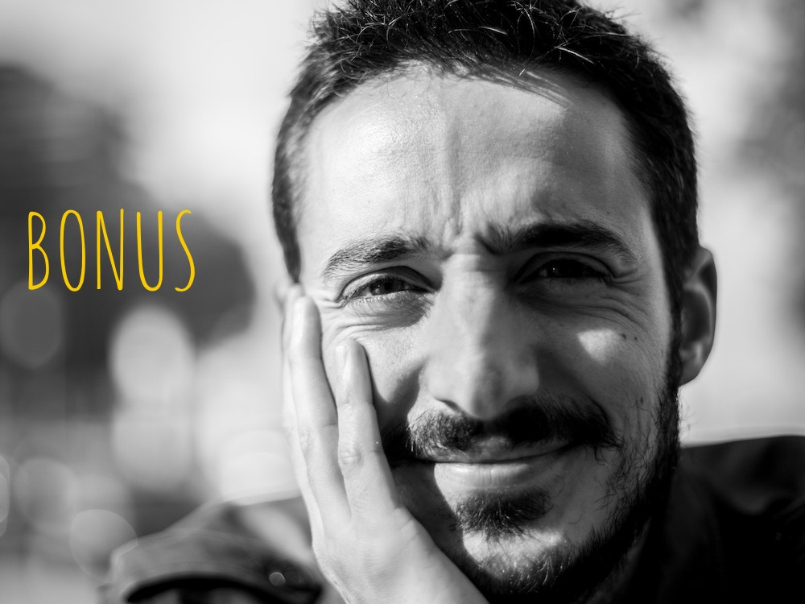

à propos
Dorian est un pianiste de jazz français basé à Bruxelles.
Amoureux de styles musicaux polymorphes, il se produit dans divers projets aux styles très divers avec diverses personnes, dans des endroits divers.
Et le tout à divers moments.
Il part et repart (tel un mars) vers de nouvelles perspectives d’expérimentation musicale armé d’un appétit glouton de découverte jamais rassasié.
presse
voir tous les articlesDisque du moment
Jens Maurits Orchestra
They Do it For a Reason

La Vidéo du moment
L'audio du moment
Prenons donc un moment pour réfléchir à 'qu'est-ce qu'un moment?

bonus?!
Clique sur une icône pour des surprises
J’ai beaucoup de gens auxquels je tiens à dédier ces quelques lignes sur ce site. C’est plutôt une chouette occasion de le faire.
Et ça me fait plaisir.
Je pense à eux car ils me « portent » et en grande partie, ils m’ont « fait » tel que je suis aujourd’hui.
Et parfois, grâce à eux je dors mieux, et je parviens même à perdre l’habitude de mettre des « guillemets » à tout va.
Et ça me fait plaisir.
Merci pour ça déjà.
Séquence émotion.
Préparez les kleenex (et hop placement de produit) :
Je tiens à remercier mes parents pour leur amour, leur soutien et leur écoute. Ils m’ont porté et poussé dans les moments où j’en avais besoin.
Décisif.
Une pensée pour Célia qui est la personne que j’écoute le plus et avec qui je partage tout: la vie, les joies, les peines, nos passions et aussi notre fils.
Un énorme merci à Nicole Miller, sa jovialité et son enthousiasme et sans qui ce site n’aurait pas vu le jour (au moins pas avant quelques années et sûrement pas aussi beau)
Je tiens aussi à remercier Roger Vantilt pour ses photos et son regard.
Et puis, tant qu’on y est, je tiens à remercier Solal d’être là et pour son sourire.
J’adresse aussi un grand salut à Diederik Wissels, un grand professeur et une grande personne tout simplement. (et je ne parle ni de taille -alors qu’il est plutôt grand- ni de l’âge -alors qu’il est plus vieux que moi- ici).
Et aussi une immense pensée pour ses amis qui font du bien:
José pour son bouc.
Alex parce que c’est le même sang et puis Tournemine.
Ben pour l’inspiration qu’il me donne et pour sa justesse (excepté sur sa guitare. Et big le tacle! Sinon c’est trop bisounours)
J-B pour la patience et l’impatience, les wiches lorraines et ce parfum de garrigue.
Xavier parce que le monde aime bien les surfeurs.
Jens pour la stimulation et une belle intransigeance. Jésus! Et puis les « tricks » et les bruits.
Julia pour ses pulls.
Marion « Coco » pour ses cheveux.
François/Frizzle parce qu’il sont deux (non je n’ai pas oublié le « s »).
Aloyse pour les poukak (je me comprends et c’est le principal) et puis Rocky
Brazùk pour son contresens, son talent et ses jeux de mots pas si foireux.
Matthias pour les yams ainsi qu’une belle mauvaise foi de sudiste comme on les aime. Et puis il est là quand il faut.
Julie et les plus beaux « ben quoi? » de wallonie (sans conteste). Une « echt ».
Patou « Alfie » Pat, parce que dans la vie il y a des cactus. Et puis le Pérou…
Le Druide pour son sens des mots.
Lois pour sa folie. Et les réveils douloureux.
Bao-Ahn pour son sens de la ponctuation.
Daan pour ses idées foisonnantes.
Joany parce qu’il faut des warrior.
Jérôme pour son instinct, ses jeux de mots foireux et tous ces services rendus. Tululu.
Martin parce que Ricky et Aston et Lobos et puis le belge c’est bon M’chou (M Majuscule).
Margaux pour son énergie et parce qu’il n’y en a qu’une.
Emily pour le 370 et tous les numéros qui suivront.
Thomas, numéro bis (comme dans Astérix) et pour ses jeux de mots très foireux (comme quoi il y a des trucs qui reviennent).
Rom parce que les gitans c’est bon.
Kelzang parce que le Porto aussi.
Marion C pour son rire et ses coups de crayons (sur mon mur ils resteront).
Florent pour sa finesse.
Maayan pour son accent.
Gregor pour sa clarinette
Annemie pour son sourire.
Mathieu et Hendrik pour leur tranquillité unique (COMBO! avec points bonus pour l’anachronisme).
Benoit pour les chemins tracés.
Niels pour les histoires.
Et Jérémy pour sa frénésie.
(Toujours finir par une rime. Jean-Michel Parprincipe pour moi. Il est pote avec Pascal Disgression. Ils habitent dans ma tête. Ça se passe bien)
Et à tous ceux que je n’ai pas citer (parce que ceci est une liste non exhaustive. Les vrais ne sont pas là.)
Et enfin merci à toi, lecteur de ces lignes. Ta patience est d’or. Ta curiosité est un gouffre sans fin (pour preuve tu lis ces lignes de remerciements jusqu’au bout. Fou que tu es). Ou alors ta souris est cassé, ou tu as atterris ici par hasard, tu cherchais à acheter un frigo en ligne et tu t’es perdue dans le cyber-espace.
Ou tu es simplement un aficionados de la parenthèse.
Quoiqu’il en soit ton intérêt pour ma musique me donne le courage de m’entêter dans la poursuite de mes aspirations artistiques.
Et je tiens publiquement à te témoigner mon admiration pour ta vivacité d’esprit et ton bon goût.
Grand bien vous fasse